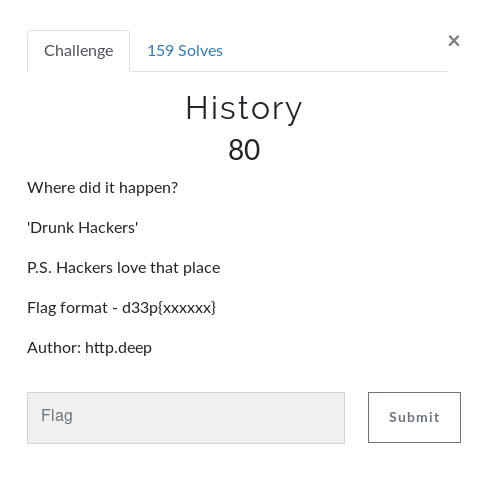
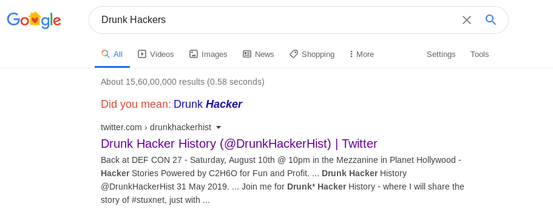

History
So in this challenge it was given the word ‘Drunk Hackers’
Let's have a quick google search for that...

Hah!! Here it is DEFCON... Also it is one of the favourite places a hacker wanna go...
Flag: d33p{defcon}
Note: For newbies, who don't know what DEFCON is... Just note that it is the first organization who introduced the concept of
CTFs. Not only Jeopardy types, ranging from linear to king of the hill modes...